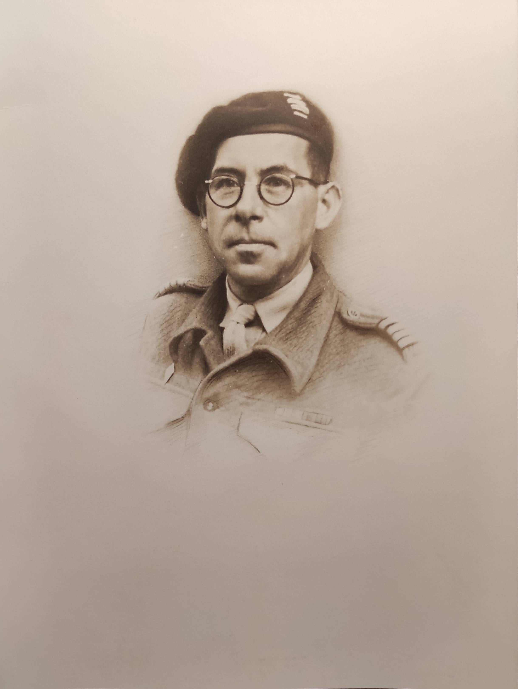

Hommage à un Français libre...
rallié en 1915 !par le Colonel Philippe Grard
M'étant abîmé une épaule, suite à une chute, j'ai été soigné par le docteur Christophe Obry, jeune et distingué chirurgien d'Amiens. Ayant appris que j’étais un ancien de FFL, le Docteur Obry m’a dit sa ferveur pour le général De Gaulle et nous avait sympathisé. Il a désiré adhérer à la Fondation de la F.L. et j’ai été heureux d’être son parrain. Il m’a parlé de son grand père Claude Saint-Léger, pour lequel, lui et sa famille manifestent une vive admiration, justifiée. Voici son histoire.

Né le 24 mars 1897 dans le Nord, Claude Saint-Léger vit avec sa famille à Lille, occupée depuis septembre 1914 par l'armée allemande. Les "département occupés" sont sous contrôle de de l’administration et de la police allemande. Saint-Léger décide de rejoindre la France afin de s'engager, malgré les extrêmes dangers de l'entreprise, et il part en 1915, alors âgé de 18 ans.
La citation pour sa première croix de guerre, décernée par le colonel Barry, Commandant le 32° régiment de Dragons, est explicite :
Saint-Léger, matricule 3420 du 4° escadron :
"Né le 24 mars 1897 et retenu à Lille par l'occupation allemande fit preuve du plus noble sentiment de patriotisme en quittant cette ville le 23 août 1915 en trompant la surveillance de la police. Il traversa le département du Nord et de la Belgique en se dérobant aux patrouilles allemandes. Après plusieurs tentatives, trompa la surveillance de ces patrouilles en traversant à la nage le canal de Gand à Terneuze pour passer en Hollande et de là gagner l’Angleterre. Après avoir fourni des renseignements très précis sur les tranchés et l’emplacement des batteries allemandes devant Lille, il passa au France et s’engagea au 32° Dragons".
Saint-Léger, après un stage à Saint-Cyr, est nommé aspirant et affecté au 26° BCP où il se voit décerner deux nouvelles superbes citations.
Saint-Léger Claude aspirant 1° compagnie du 26° bataillon de Chasseurs à Pied :
"Jeune aspirant d’une énergie et d’un courage exemplaire. Le 24 septembre 1918 a entraîné sa section à l'assaut des lignes ennemies, l’a installé dans la position conquise malgré de violents tirs d'artillerie et de mitrailleuses. A contribué à repousser une violente contre-attaque".
Saint-Léger Claude aspirant 1° compagnie de mitrailleuses du 26° bataillon de Chasseurs à pied :
"S'est particulièrement distingué comme chef de section de mitrailleuses le 5 novembre 1918, à la prise du village de L___. Adjoint à la compagnie de tête à par son audace et l’emploi judicieux de ces pièces, coopéré de la façon la plus efficace à la prise et à la conservation de cette importante position, sous un bombardement des plus violents."
Ces deux dernières citations sont à l’ordre de la division.
Il est nommé chevalier de la Légion d’Honneur en date du 13 mars 1933.
Au début de la guerre de 1939, il est marié, père de quatre enfants (un cinquième est attendu) et il est affecté "spécial" dans ses usines. Malgré cela il rejoint sur sa demande les armées le 3 décembre 1939. Après la reddition de Dunkerque, il tente de gagner l’Angleterre en passant 10h en mer. Il échoue et est fait prisonnier à Mardyck. Ramené à Lille, il refuse sa libération qui était conditionnée par l’obligation de remettre ses usines en marche.
Après un an en Silésie, il est libéré au titre de père de famille.
Se trouvant en Algérie en Novembre 1942, au moment de l’opération Torch, il est chargé de mission au Gouvernement Général.
Il quitte volontairement cette nouvelle affectation spéciale pour s’engager dans l’Armée en août 1943. Envoyé en Angleterre fin janvier 1944, il débarque en Normandie le 17 juin 1944 et fait la campagne jusqu’au début septembre avec le 8° corps blindé britannique.
En raison de l’interdiction faite aux officiers de liaison français de se rendre en Belgique, il se fixe à Amiens où il rend les plus grands service à la Préfecture de la Somme.
Nommé ensuite chef de mission L of C, c’est à dire au plus haut poste de mission franco-britannique, il ne cessait de demander à repartir avec son unité en zone de combat.
C’est en se rendant d’Amiens à Lille, en service commandé, qu’il a trouvé la mort le 14 décembre 1944, au cours d’un accident d’automobile dû au verglas.
Terminé trop tôt, à l’âge de 47 ans, la vie du commandant Saint-Léger fut exemplaire. Elle débuta lorsqu’il réalisa une évasion périlleuse, âgé de 18 ans, pour aller se battre au front, où sa conduite au feu fut magnifique.
Il montra la même détermination de 1939 à 1944 pour aller se battre, en refusant les affectations spéciales attribuées en raison de son âge, de sa situation de chef de famille nombreuse et de chef d’entreprise. Il n’a pas fait partie des FFL mais il en avait l’esprit. Il l’a prouvé dès 1915 en ralliant l’Angleterre pour aller au combat, montrant le chemin difficile suivi 25 ans après par d’autres compatriotes.
Je pense que mes camarades FFL m’approuveront lorsque je dis que Claude Saint-Léger fut des nôtres, à part entière !
Colonel Philippe Grard - FFL n° 4150